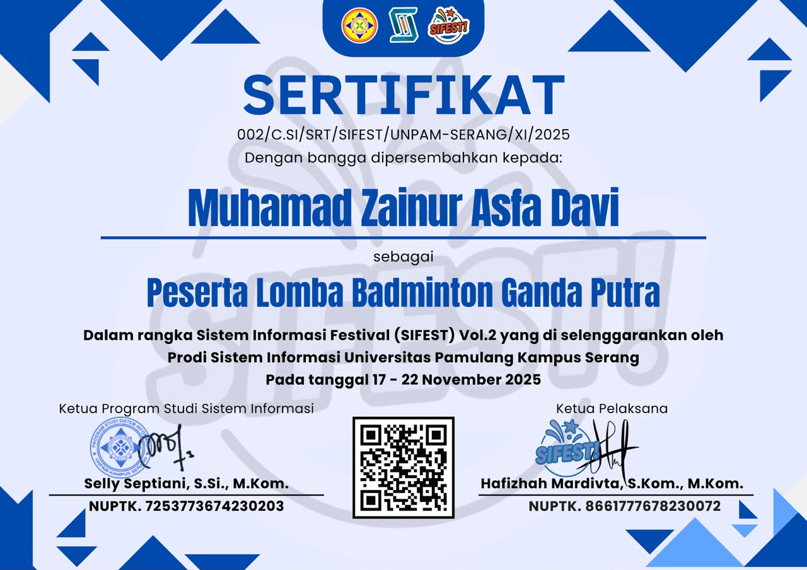

03. CERTIFICATES & PROJECTS

Sertifikat Praktik Kerja Lapangan
Sertifikat penghargaan atas penyelesaian program PKL di PT. Awinet Global Mandiri pada bidang Teknis Jaringan & Administrasi Data.
Networking & Data
Sertifikat Uji Kompetensi (UKOM)
Sertifikat kelulusan uji kompetensi keahlian Rekayasa Perangkat Lunak (RPL) dengan fokus pada logika pemrograman dan basis data.
Software & SQL
Sertifikat Turnamen Voli Kampus
Penghargaan atas pencapaian dan partisipasi aktif dalam turnamen bola voli yang diselenggarakan di lingkungan Universitas Pamulang.
Non-Academic Achievement
Pelatihan Penulisan Jurnal PkM Mahasiswa
Sertifikasi kompetensi dalam menyusun dan merancang dokumen publikasi ilmiah Pengabdian kepada Masyarakat (PkM) berbasis data terstruktur di Program Studi Sistem Informasi.

Kajian Bareng Vol. 10 - Optimalisasi Jurnal
Pelatihan intensif tingkat lanjut yang diselenggarakan oleh HMSI Universitas Pamulang Serang mengenai teknik enkapsulasi ide dan standarisasi penulisan karya ilmiah yang jelas, taktis, dan terstruktur.

Peserta Loba Badminton Ganda Putra - SIFEST Vol.2
Berpartisipasi aktif dalam kompetisi olahraga ganda putra pada Sistem Informasi Festival (SIFEST) Vol.2 yang diselenggarakan oleh Prodi Sistem Informasi Universitas Pamulang Kampus Serang. Menunjukkan kemampuan kerja sama taktis, fokus tinggi, dan sportivitas antar mahasiswa.